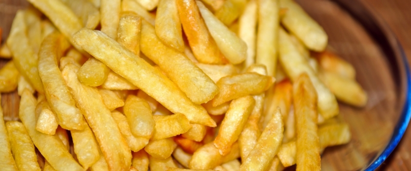

Жареная картошка

- TODO
Выбрать менее крахмалистую картошку, почистить и нарезать брусочками толщиной не больше 1 см. Класть картошку нужно на горячую сковороду с достаточным количеством рафинированного растительного масла. Не класть картошки слишком много, иначе она будет не жариться, а париться.
Не отвлекаться от жарки надолго, а постоянно помешивать. Огонь должен быть достаточно большим, иначе не получится желаемой корочки. Солить картошку лучше в середине жарки, чтобы она могла впитать в себя соль.
Когда цвет будет равномерно-золотистым со всех сторон, а внутри картошка уже не будет жесткой, огонь можно выключать.
 Назад к списку рецептов
Назад к списку рецептов